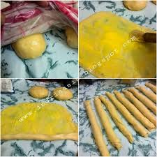

1.Campur semua bahan roti jadi satu

2.Uleni sampai kalis (aku pake tangan) jangan takut lengket ya, lumuri tangan sesekali dengan tepung (tapi jangan menambahkan tepung) uleni terus sampai adonan kalis.
3.Kalisnya adonan canai tidak sekalis adonan roti ya, kira2 seperti ini sudah cukup.
